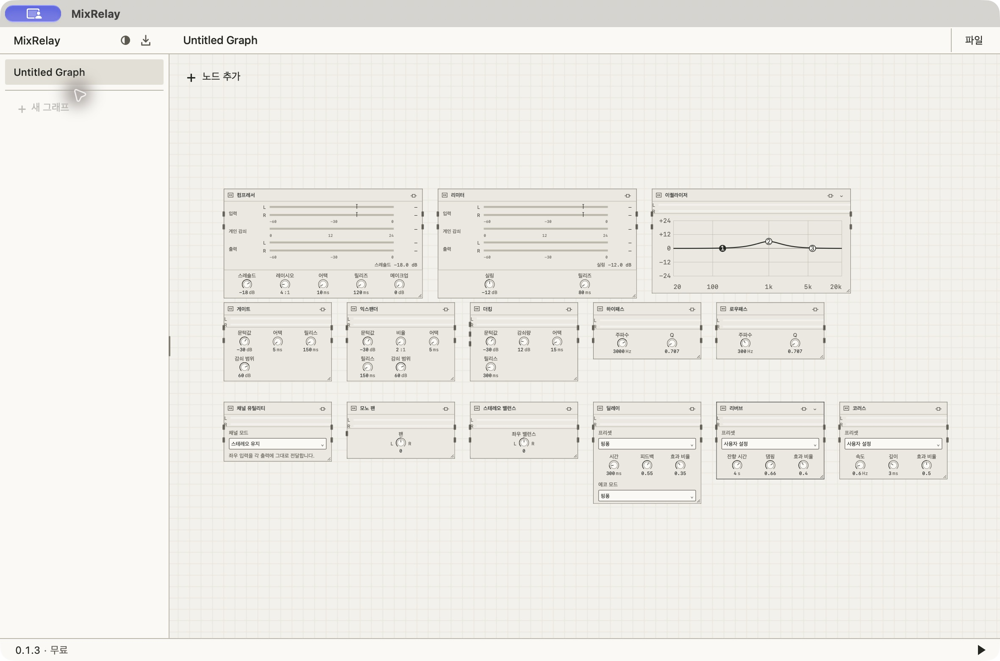
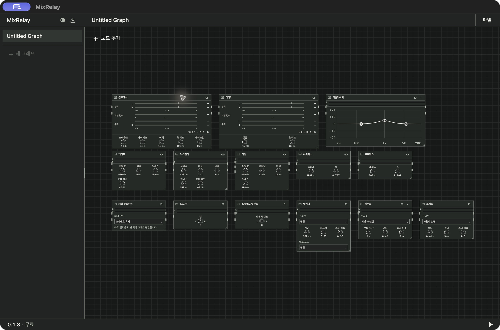
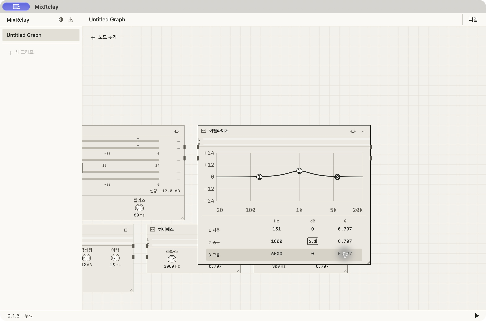
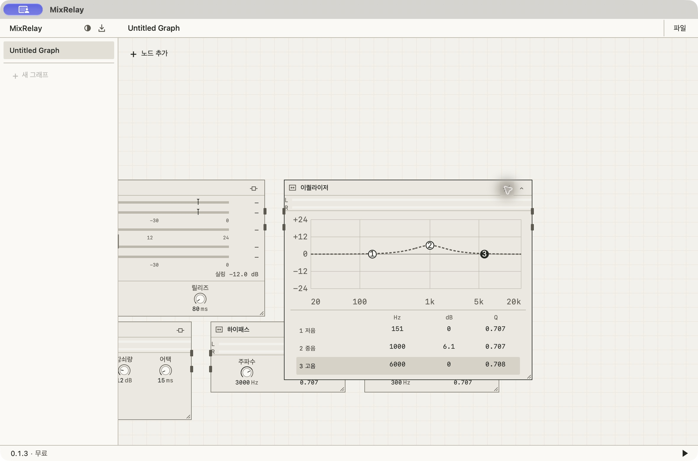
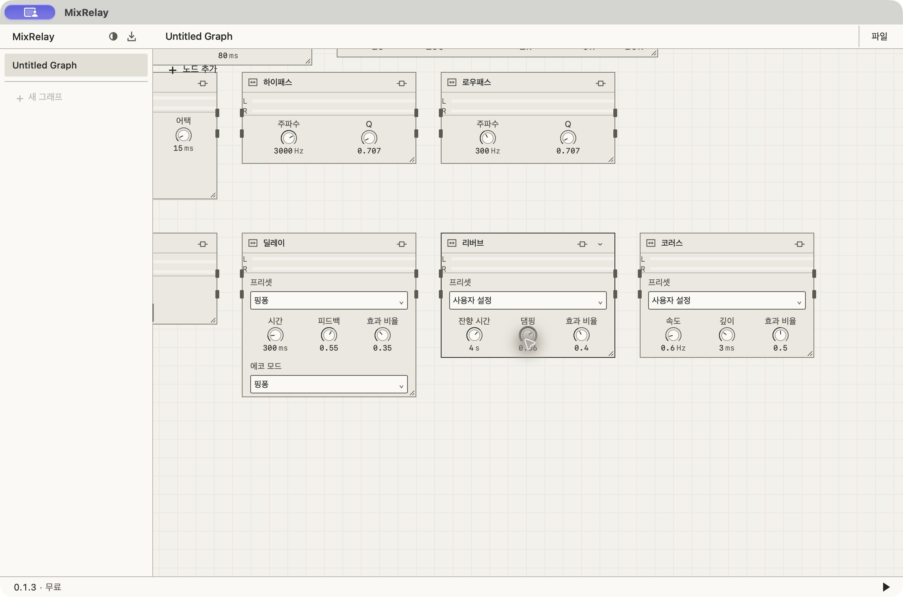
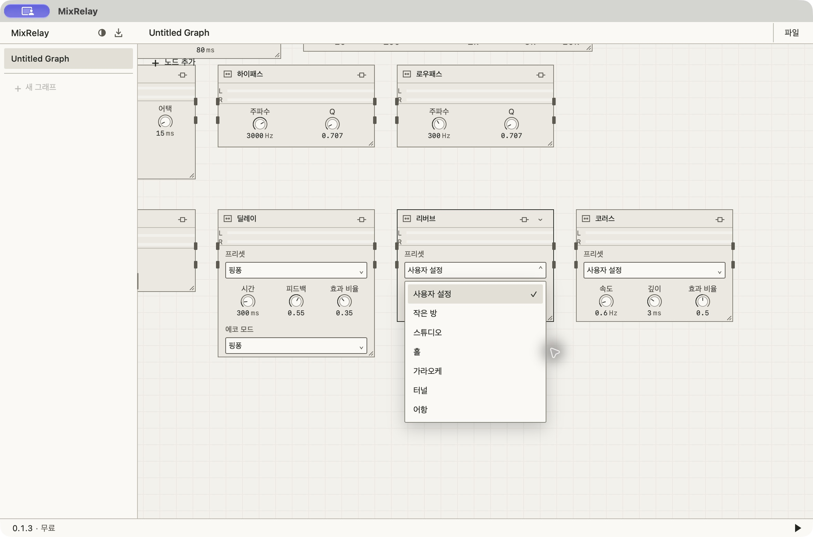
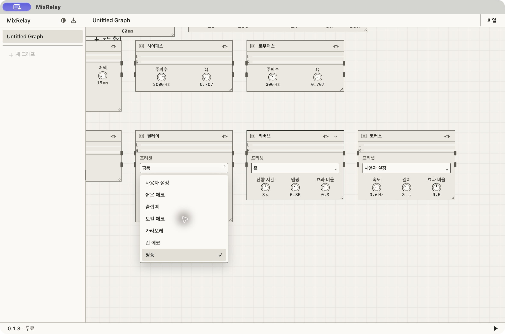

내장 효과 14종
라이트·다크 전체 화면과 EQ, 노브, 프리셋을 한곳에서 확인하세요.
개발 설치본의 디자인 참고 화면입니다. 이미지를 누르면 원본 크기로 볼 수 있습니다.
첫째 줄
컴프레서 · 리미터 · 이퀄라이저
둘째 줄
게이트 · 익스팬더 · 더킹 · 하이패스 · 로우패스
셋째 줄
채널 유틸리티 · 모노 팬 · 스테레오 밸런스 · 딜레이 · 리버브 · 코러스
전체 · 라이트
14개 효과를 함께 배치한 설치본 화면입니다.

원본 크게 보기 ↗전체 · 다크
입력·감쇄·출력 미터는 측정 대기 상태이며 값은 —로 표시됩니다.

원본 크게 보기 ↗EQ · 3밴드 값 편집
공통 펼침 버튼 아래에서 각 밴드의 Hz·dB·Q를 직접 편집합니다.

원본 크게 보기 ↗EQ · 바이패스
설정값은 유지되고 곡선이 점선으로 바뀝니다.

원본 크게 보기 ↗노브 · 키보드 포커스
댐핑 노브의 포커스 상태입니다. 캡처 포인터가 숫자 일부를 가리고 있습니다.

원본 크게 보기 ↗숫자 · 편집 포커스
실제 값 한 줄을 감싸는 작은 입력 경계입니다. 캡처 포인터가 일부 겹칩니다.
리버브 · 프리셋
작은 방, 스튜디오, 홀, 가라오케, 터널, 어항.

원본 크게 보기 ↗딜레이 · 프리셋
짧은 에코, 슬랩백, 보컬 에코, 가라오케, 긴 에코, 핑퐁.

원본 크게 보기 ↗